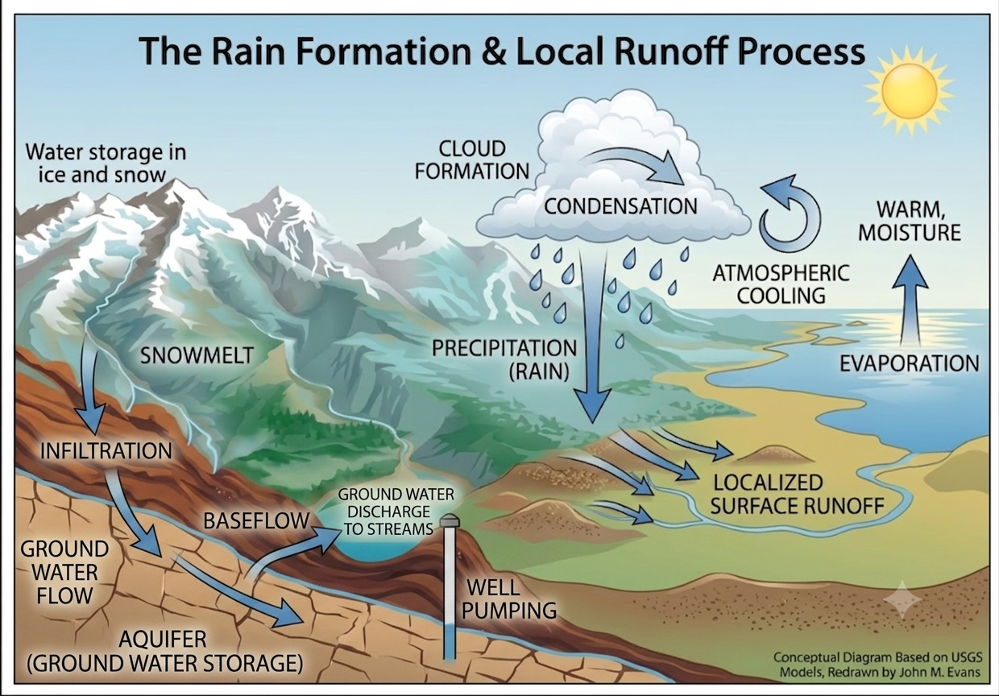
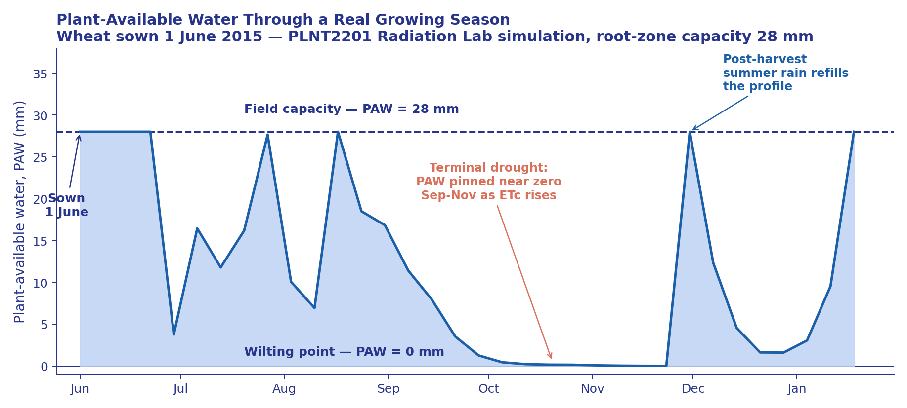
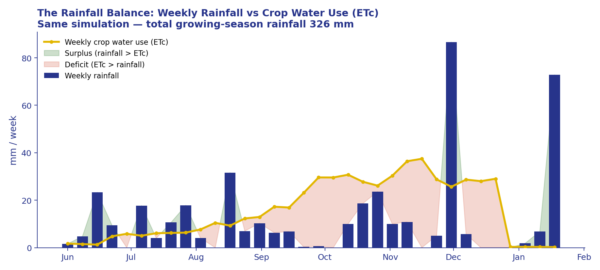

The agrometeorology toolkit, the Mediterranean growing season, and why WA rainfall is so variable
Lecture 04 · University of Western Australia Presented by Gustavo Alckmin
What you'll be able to do by the end
Explain rain formation, the soil water balance, and calculate plant-available water and soil-moisture deficit for a given soil.
Explain why frost risk depends on moisture as much as temperature, and calculate growing-degree-days for a simple example.
Classify the WA grainbelt's climate using the Köppen system and correctly read a temperature-rainfall (climate) chart.
Explain the Mediterranean growing season, the four drivers of WA rainfall variability, and the observed drying trend and its implications.
Why it matters
Every later lecture's sowing date, variety choice, nitrogen rate and lime program is a decision made inside the physical system this lecture builds.
Part 1
Foundations of Agrometeorology
The physical vocabulary and quantitative tools — water, heat and classification — that this whole unit depends on.
What Is Agrometeorology? Weather vs Climate
The physical science of weather and climate as it affects agriculture — the toolkit for turning atmospheric and soil measurements into agronomic decisions:
Weather — the day-to-day conditions a grower reacts to (today's forecast, this week's frost risk).
Climate — the long-term statistical distribution of weather that shapes strategy (variety choice, rotation, capital investment).
In a rainfed system: rainfall sets the ceiling on yield, temperature governs the pace of development and frost/heat risk, and their interplay defines the growing season.
This lecture builds the vocabulary and equations every later lecture assumes you already have
Irradiance, Day Length and Temperature
Solar input
Irradiance — solar radiation reaching the crop.
PAR (photosynthetically active radiation) — the ~400–700 nm fraction that actually drives photosynthesis.
Both follow daily and seasonal patterns governed by day length (photoperiod) and cloud cover.
The winter trade-off
Temperature follows a predictable seasonal cycle in a Mediterranean climate — cool in the growing season, hot in summer (the chart later this Part shows this directly).
WA's winter growing season has short days and lower light than summer — crops are bred and managed around this genuine light/temperature trade-off, not just around water.
Solar Radiation: Winter vs Summer
Winter growing season
Solar radiation: 8–10 MJ/m²/day (June–August)
Unlikely to limit crop growth, though crop and pasture leaf areas remain low
Second most important climatic element after rainfall — determines temperature and evaporation regimes
Summer conditions
Solar energy: up to 30 MJ/m²/day
Driven by high sun elevation, clear atmosphere, cloudless skies
Among the greatest radiation loads at Earth's surface — explains productivity of irrigated summer crops in Mediterranean climates
In WA the "lift and cool" step is delivered mainly by cold fronts, and less often by cut-off lows and northwest cloudbands (Part 3).
Beyond Rain Formation: Where the Water Goes Next

Once rain lands, it splits three ways: infiltration into the soil (feeding the soil water "tank" of the next few slides), surface runoff across the paddock, or deep drainage past the root zone toward groundwater.
Baseflow — groundwater slowly discharging back to streams — is why some rivers keep flowing long after the last rain.
The ice/snow/mountain elements of this classic diagram aren't WA-relevant — no snowmelt feeds the grainbelt — but the infiltration → soil storage → drainage/runoff chain is exactly what the soil water balance equation (next slide) is accounting for.
Inputs — rainfall (and irrigation where used) plus whatever moisture is already stored in the profile.
Outputs — evapotranspiration (evaporation + transpiration), drainage below the root zone, and surface runoff.
What's left after outputs is what the crop actually has available to grow on.
L01's French-Schultz equation is a simplified version of this: rainfall minus one lumped evaporative-loss term
Soil Water-Holding Capacity: Three Reference Points
Three reference points define the water any soil can offer a crop — the next slide fills the tank in.
Plant-Available Water & Soil-Moisture Deficit
PAW is the tank's capacity (fixed by soil texture); SMD is how empty it is right now (changes daily).
PAW Through a Real Growing Season

Real weekly data from a UWA PLNT2201 radiation-lab wheat simulation (sown 1 June, root-zone PAW capacity 28 mm) — the same "tank" from the previous slide, now with real numbers.
The Rainfall Balance: Recharge vs Deficit

Same simulation, plotted as the balance itself — generated in Python directly from the lab's weekly Rainfall and ETc columns.
Frost Risk: Why Moisture Matters as Much as Temperature
Radiation frost forms on clear, calm nights when the ground loses heat to space faster than it's replaced — three ingredients:
Clear skies — no cloud blanket to reflect outgoing heat back down.
Still air — no wind to mix warmer air down to the surface.
Low humidity — dry air is a poor absorber of outgoing radiation (water vapour is itself a greenhouse gas), so heat escapes to space faster.
Moist air buffers against frost twice over: it traps outgoing heat, and condensing water releases latent heat that slows further cooling
Growing Degree Days: Quantifying Thermal Time
GDD (°C-days) = Tmax + Tmin 2 − Tbase
Summed day by day across the season (never below zero for a single day).
Tbase is the threshold below which development effectively stops — commonly taken as ~0°C for a simple wheat thermal-time model.
Day
Tmax
Tmin
Avg
GDD
1
22°C
8°C
15°C
15
2
18°C
6°C
12°C
12
3
14°C
2°C
8°C
8
Cumulative after 3 days: 15+12+8 = 35°C-days (illustrative, Tbase=0°C).
Köppen Climate Classification: A Global Framework
Code part
Meaning
WA grainbelt
1st letter (main group)
A tropical, B dry, C temperate, D continental, E polar
C — temperate
2nd letter (precipitation)
s dry summer, w dry winter, f no dry season
s — dry summer
3rd letter (summer heat)
a hot summer (>22°C), b warm summer (<22°C)
a north / b south
WA grainbelt = Csa (hotter north, e.g. Geraldton) to Csb (milder south) — shared with California's Central Valley, central Chile, the Mediterranean basin and South Africa's Western Cape.
Reading a Temperature-Rainfall (Climate) Chart
Fig-L04-Seasonality — schematic Walter-Lieth-style pattern for a central-wheatbelt town: rainfall and cool temperature coincide May–October; illustrative, not station data.
Critical Periods: When Timing Matters Most
Not every day of the season matters equally — specific developmental windows have disproportionate effects on yield:
Timed using GDD/thermal time rather than the calendar, since development tracks accumulated heat, not the date.
Flowering is the single most sensitive window — this is where frost (previous slides) and heat (Part 2) do the most damage.
The same GDD-based timing logic governs input decisions too — e.g. 2,4-D herbicide must wait until after a defined growth stage to avoid crop distortion.
Part 2
The Mediterranean Growing Season
Applying Part 1's toolkit to WA's specific climate: the seasonal pattern, the growing season it defines, and the risks at its margins.
The Mediterranean Pattern: Winter Rain, Summer Drought
Delivered by cold fronts in the westerly wind belt, which migrates north over the continent in winter; summer is hot and dry under the subtropical ridge (Part 3).
A strong spatial gradient runs across the grainbelt — from over 1000 mm on the far south-west coast down to under 275 mm at the eastern margin.
The 275, 450 and 800 mm isohyets (green lines) mark the 1910–1999 baseline — DPIRD's 2000–2024 zoning shows those same rainfall totals now occurring further west and south than they used to.
Source: DPIRD, "South-west WA average annual rainfall zones 2000–2024 compared to 1910–1999."
Defining the Growing Season: Break, Length, Terminal Drought
1The break — first substantial autumn rains (~25 mm over a few days) that wet soil enough to sow; timing ranges April–July.
2The growing season — the period when rainfall exceeds evaporative demand, running through winter and early spring.
3Terminal drought — when spring rain stops and rising temperature/evaporation exhaust soil moisture, forcing grain fill on stored water.
Frost and Heat at the Margins: Crop Consequences
Frost
If a radiation frost (P1-7) coincides with flowering, it sterilises cereal florets and can destroy a season's yield in a single night.
Frost severity has not eased with warming — clearer skies under a drying climate promote exactly the radiative cooling P1-7 described.
Heat
High temperatures during flowering/grain fill damage pollen viability — wheat pollen is impaired above roughly 35°C.
Accelerates development (more GDD accumulated per day) and shortens grain fill, shrivelling grain.
Short Break
Halfway Point
Part 3 turns from the seasonal pattern itself to why that pattern varies so much from year to year.
Part 3
Why Is WA Rainfall So Variable?
Four large-scale ocean-atmosphere drivers that make or break a WA season, and how growers use them to manage risk.
Why Is WA Rainfall So Variable?
%%{init: {'theme':'base', 'themeVariables': { 'fontSize':'18px', 'fontFamily':'Segoe UI'}}}%%
flowchart TB
subgraph drivers["Large-Scale Ocean-Atmosphere Drivers"]
direction LR
ENSO["ENSO (Pacific) weaker WA effect"]
IOD["IOD (Indian Ocean) WA's dominant driver"]
SAM["SAM (Southern Ocean) weeks-scale"]
RIDGE["Subtropical Ridge position & strength"]
end
RAIN["WA Grainbelt Winter Rainfall"]
SYS["Physical Delivery Systems Cold fronts • Cut-off lows • NW cloudbands"]
ENSO --> RAIN
IOD --> RAIN
SAM --> RAIN
RIDGE --> RAIN
RAIN --> SYS
classDef dominant fill:#FFF7D7,stroke:#E2B600,stroke-width:3px,color:#333
classDef central fill:#E8F0FE,stroke:#27348B,stroke-width:3px,color:#27348B,font-size:20px
classDef delivery fill:#F2EDE8,stroke:#666,stroke-width:2px,color:#333
classDef driverBox fill:none,stroke:#27348B,stroke-width:2px,stroke-dasharray:5
class IOD dominant
class RAIN central
class SYS delivery
class drivers driverBox
Four large-scale drivers modulate WA rainfall through the same delivery systems introduced in Part 1 — they can reinforce or cancel each other.
El Niño–Southern Oscillation (ENSO)
El Niño — warming of the central/eastern tropical Pacific shifts convection away from Australia; typically drier and hotter across eastern and, more weakly, southern Australia.
La Niña — the opposite phase; typically wetter across eastern and northern Australia.
Monitored via the SOI (Tahiti–Darwin pressure difference) and sea-surface indices like NINO3.4.
BOM explainer: Understanding ENSO
The Indian Ocean Dipole (IOD): WA's Dominant Driver
Sea-surface temperature difference between the western (near Africa) and eastern (near Indonesia) tropical Indian Ocean:
Positive IOD — cooler water off Indonesia reduces moisture available to systems reaching Australia; typically suppresses winter–spring rainfall, raising drought and frost risk.
Negative IOD — warmer eastern Indian Ocean feeds more moisture into Australian systems; typically wetter winters and springs.
ENSO and the IOD are physically linked and often coincide — El Niño with a positive IOD compounds dry conditions.
The IOD peaks in exactly WA's winter-spring growing season — a developing positive IOD is a genuine warning of a poor finish
BOM explainer: Indian Ocean Dipole
The Southern Annular Mode (SAM)
The north–south movement of the belt of westerly winds and their embedded cold fronts circling the Southern Ocean — the systems that actually deliver most of WA's winter rain.
Positive SAM — contracts the westerlies poleward (south); in winter this tends to push rain-bearing fronts south of the coastline, reducing rainfall.
Negative SAM — expands the westerlies north, bringing fronts further onto the continent, generally increasing winter rainfall.
Operates on a much shorter timescale (weeks, not months) than ENSO or the IOD — harder to forecast far ahead, and drives variability within a season.
BOM explainer: Southern Annular Mode
The Subtropical Ridge, Cut-Off Lows and Cold Fronts
What actually delivers the rain
Subtropical ridge — the high-pressure belt dominating southern Australia in summer, retreating north in winter; its position/strength controls whether fronts can reach the grainbelt.
Cold fronts — the workhorses of WA winter rainfall, delivering frequent, moderate falls (the "lift and cool" step from Part 1).
Secondary systems
Cut-off lows — less frequent but can deliver heavy, widespread rain.
NW cloudbands — draw tropical Indian Ocean moisture across the continent, sometimes producing season-making rains; their moisture supply is modulated by the IOD.
Seasonal Forecasting: Using the Drivers to Manage Risk
The Bureau of Meteorology issues probabilistic outlooks — the chance of exceeding median rainfall — from dynamical models simulating these drivers forward in time:
A "65% chance of a drier-than-median spring" is a shift in the odds, not a certainty — it weights decisions, it doesn't make them.
Growers integrate outlooks into nitrogen investment, crop/variety choice and risk exposure — always alongside what the season has actually delivered so far (stored soil moisture from Part 1's water balance, and the timing of the break).
Forecast skill is modest, particularly for the autumn break, and declines with lead time.
Practical Tool: Rainfall Deciles and the DPIRD Rainfall-to-Date Tool
A decile ranks this season's rainfall-to-date against every recorded season at the same location, up to the same date:
Decile 1 — among the driest 10% of years on record; decile 5 — the median year; decile 10 — among the wettest 10%.
Unlike a seasonal forecast (previous slide, which is probabilistic and about the future), a decile is a measured fact about the past and present — how unusual this season already is, right now.
DPIRD's free Rainfall to Date tool lets growers pick any WA weather station and see the current season's decile, updated daily, against the full historical record.
dpird.wa.gov.au → Online Tools → Rainfall and Irrigation Calculators → Rainfall to Date Tool
Part 4
The Changing Climate
The observed long-term drying trend, how growers have adapted, and what the future likely holds.
The Observed Drying Trend in South-West WA
15–20%decline in May–July rainfall since the mid-20th century, accelerating from the 1970s
↓ frontsfewer rain-bearing fronts reaching the region each winter
margins hit hardestdecline strongest in the once-most-reliable high-rainfall western/southern margins
How Growers Have Adapted to a Drier Climate
Counterintuitively, total grain production and water-use efficiency have both risen despite less growing-season rainfall:
Conservation agriculture (no-till, stubble retention) conserving scarce soil moisture — protecting the "tank" from Part 1.
Earlier and dry sowing to use every millimetre of a shortened season; summer weed control to bank soil moisture ahead of the break.
Controlled traffic reducing compaction; shifts in crop mix and geographic distribution of cropping.
The yield gap has closed faster than the climate has dried — but this adaptation has limits
The Future Climate and Its Implications for WA Grain
Consensus projections
Continued decline in cool-season rainfall; higher temperatures; more frequent, intense heat extremes at flowering/grain-fill.
A shorter effective growing season, partially offset by rising CO₂ boosting water-use efficiency and yield potential for WA's C3 crops.
The net picture
CO₂ fertilisation partially but not fully compensates for warming/drying — the balance varies greatly year to year.
The dominant consequence is more variability and risk, not a simple uniform decline.
Bringing It Together: Climate as the System Underneath Everything
The toolkit is quantitativeRain formation, the water balance, PAW/SMD, frost mechanics and GDD are calculations, not just vocabulary.
The season is a known shapeThe break, growing season and terminal drought bracket every timing decision in the unit.
Variability has physical causesENSO, IOD, SAM and the subtropical ridge explain why seasons differ — and why the average itself is drying.
Key Reference
Anderson, W K, and Garlinge, J R. (2000), The Wheat book: principles and practice. Department of Primary Industries and Regional Development, Western Australia, Perth. Bulletin 4443.
Chapter 1 Environment — Coordinator: Ian Foster
Wheatbook 1 authors: J. Cramb, M.W. Perry, S. McKeague, M.J. Mulcahy
Revised by: J. Cramb, J. Courtney and P. Tille